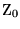

ON THE ELECTRODYNAMICS
OF MOVING BODIES
By A. Einstein
June 30, 1905
It is known that Maxwell's electrodynamics�as usually understood at the present time�when applied to moving bodies, leads to asymmetries which do not appear to be inherent in the phenomena. Take, for example, the reciprocal electrodynamic action of a magnet and a conductor. The observable phenomenon here depends only on the relative motion of the conductor and the magnet, whereas the customary view draws a sharp distinction between the two cases in which either the one or the other of these bodies is in motion. For if the magnet is in motion and the conductor at rest, there arises in the neighbourhood of the magnet an electric field with a certain definite energy, producing a current at the places where parts of the conductor are situated. But if the magnet is stationary and the conductor in motion, no electric field arises in the neighbourhood of the magnet. In the conductor, however, we find an electromotive force, to which in itself there is no corresponding energy, but which gives rise�assuming equality of relative motion in the two cases discussed�to electric currents of the same path and intensity as those produced by the electric forces in the former case.
Examples of this sort, together with the unsuccessful attempts to discover any motion of the earth relatively to the �light medium,� suggest that the phenomena of electrodynamics as well as of mechanics possess no properties corresponding to the idea of absolute rest. They suggest rather that, as has already been shown to the first order of small quantities, the same laws of electrodynamics and optics will be valid for all frames of reference for which the equations of mechanics hold good.1 We will raise this conjecture (the purport of which will hereafter be called the �Principle of Relativity�) to the status of a postulate, and also introduce another postulate, which is only apparently irreconcilable with the former, namely, that light is always propagated in empty space with a definite velocity c which is independent of the state of motion of the emitting body. These two postulates suffice for the attainment of a simple and consistent theory of the electrodynamics of moving bodies based on Maxwell's theory for stationary bodies. The introduction of a �luminiferous ether� will prove to be superfluous inasmuch as the view here to be developed will not require an �absolutely stationary space� provided with special properties, nor assign a velocity-vector to a point of the empty space in which electromagnetic processes take place.
The theory to be developed is based�like all electrodynamics�on the kinematics of the rigid body, since the assertions of any such theory have to do with the relationships between rigid bodies (systems of co-ordinates), clocks, and electromagnetic processes. Insufficient consideration of this circumstance lies at the root of the difficulties which the electrodynamics of moving bodies at present encounters.
I. KINEMATICAL PART
� 1. Definition of Simultaneity
Let us take a system of co-ordinates in which the equations of Newtonian mechanics hold good.2 In order to render our presentation more precise and to distinguish this system of co-ordinates verbally from others which will be introduced hereafter, we call it the �stationary system.�
If a material point is at rest relatively to this system of co-ordinates, its position can be defined relatively thereto by the employment of rigid standards of measurement and the methods of Euclidean geometry, and can be expressed in Cartesian co-ordinates.
If we wish to describe the motion of a material point, we give the values of its co-ordinates as functions of the time. Now we must bear carefully in mind that a mathematical description of this kind has no physical meaning unless we are quite clear as to what we understand by �time.� We have to take into account that all our judgments in which time plays a part are always judgments of simultaneous events. If, for instance, I say, �That train arrives here at 7 o'clock,� I mean something like this: �The pointing of the small hand of my watch to 7 and the arrival of the train are simultaneous events.�3
It might appear possible to overcome all the difficulties attending the definition of �time� by substituting �the position of the small hand of my watch� for �time.� And in fact such a definition is satisfactory when we are concerned with defining a time exclusively for the place where the watch is located; but it is no longer satisfactory when we have to connect in time series of events occurring at different places, or�what comes to the same thing�to evaluate the times of events occurring at places remote from the watch.
We might, of course, content ourselves with time values determined by an observer stationed together with the watch at the origin of the co-ordinates, and co-ordinating the corresponding positions of the hands with light signals, given out by every event to be timed, and reaching him through empty space. But this co-ordination has the disadvantage that it is not independent of the standpoint of the observer with the watch or clock, as we know from experience. We arrive at a much more practical determination along the following line of thought.
If at the point A of space there is a clock, an observer at A can determine the time values of events in the immediate proximity of A by finding the positions of the hands which are simultaneous with these events. If there is at the point B of space another clock in all respects resembling the one at A, it is possible for an observer at B to determine the time values of events in the immediate neighbourhood of B. But it is not possible without further assumption to compare, in respect of time, an event at A with an event at B. We have so far defined only an �A time� and a �B time.� We have not defined a common �time� for A and B, for the latter cannot be defined at all unless we establish by definition that the �time� required by light to travel from A to B equals the �time� it requires to travel from B to A. Let a ray of light start at the �A time� from A towards B, let it at the �B time� be reflected at B in the direction of A, and arrive again at A at the �A time� .
In accordance with definition the two clocks synchronize if
We assume that this definition of synchronism is free from contradictions, and possible for any number of points; and that the following relations are universally valid:�
- If the clock at B synchronizes with the clock at A, the clock at A synchronizes with the clock at B.
- If the clock at A synchronizes with the clock at B and also with the clock at C, the clocks at B and C also synchronize with each other.
Thus with the help of certain imaginary physical experiments we have settled what is to be understood by synchronous stationary clocks located at different places, and have evidently obtained a definition of �simultaneous,� or �synchronous,� and of �time.� The �time� of an event is that which is given simultaneously with the event by a stationary clock located at the place of the event, this clock being synchronous, and indeed synchronous for all time determinations, with a specified stationary clock.
In agreement with experience we further assume the quantity
to be a universal constant�the velocity of light in empty space.
It is essential to have time defined by means of stationary clocks in the stationary system, and the time now defined being appropriate to the stationary system we call it �the time of the stationary system.�
� 2. On the Relativity of Lengths and Times
The following reflexions are based on the principle of relativity and on the principle of the constancy of the velocity of light. These two principles we define as follows:�
- The laws by which the states of physical systems undergo change are not affected, whether these changes of state be referred to the one or the other of two systems of co-ordinates in uniform translatory motion.
- Any ray of light moves in the �stationary� system of
co-ordinates with the determined velocity c, whether the ray
be emitted by a stationary or by a moving body. Hence
where time interval is to be taken in the sense of the definition in � 1.
Let there be given a stationary rigid rod; and let its length be l as measured by a measuring-rod which is also stationary. We now imagine the axis of the rod lying along the axis of x of the stationary system of co-ordinates, and that a uniform motion of parallel translation with velocity v along the axis of x in the direction of increasing x is then imparted to the rod. We now inquire as to the length of the moving rod, and imagine its length to be ascertained by the following two operations:�
- (a)
- The observer moves together with the given measuring-rod and
the rod to be measured, and measures the length of the rod directly
by superposing the measuring-rod, in just the same way as if all
three were at rest.
- (b)
- By means of stationary clocks set up in the stationary system and synchronizing in accordance with � 1, the observer ascertains at what points of the stationary system the two ends of the rod to be measured are located at a definite time. The distance between these two points, measured by the measuring-rod already employed, which in this case is at rest, is also a length which may be designated �the length of the rod.�
In accordance with the principle of relativity the length to be discovered by the operation (a)�we will call it �the length of the rod in the moving system��must be equal to the length l of the stationary rod.
The length to be discovered by the operation (b) we will call �the length of the (moving) rod in the stationary system.� This we shall determine on the basis of our two principles, and we shall find that it differs from l.
Current kinematics tacitly assumes that the lengths determined by these two operations are precisely equal, or in other words, that a moving rigid body at the epoch t may in geometrical respects be perfectly represented by the same body at rest in a definite position.
We imagine further that at the two ends A and B of the rod, clocks are placed which synchronize with the clocks of the stationary system, that is to say that their indications correspond at any instant to the �time of the stationary system� at the places where they happen to be. These clocks are therefore �synchronous in the stationary system.�
We imagine further that with each clock there is a moving observer, and that these observers apply to both clocks the criterion established in � 1 for the synchronization of two clocks. Let a ray of light depart from A at the time4 , let it be reflected at B at the time , and reach A again at the time . Taking into consideration the principle of the constancy of the velocity of light we find that
where denotes the length of the moving rod�measured in the stationary system. Observers moving with the moving rod would thus find that the two clocks were not synchronous, while observers in the stationary system would declare the clocks to be synchronous.
So we see that we cannot attach any absolute signification to the concept of simultaneity, but that two events which, viewed from a system of co-ordinates, are simultaneous, can no longer be looked upon as simultaneous events when envisaged from a system which is in motion relatively to that system.
� 3. Theory of the Transformation of Co-ordinates and Times from a Stationary System to another System in Uniform Motion of Translation Relatively to the Former
Let us in �stationary� space take two systems of co-ordinates, i.e. two systems, each of three rigid material lines, perpendicular to one another, and issuing from a point. Let the axes of X of the two systems coincide, and their axes of Y and Z respectively be parallel. Let each system be provided with a rigid measuring-rod and a number of clocks, and let the two measuring-rods, and likewise all the clocks of the two systems, be in all respects alike.
Now to the origin of one of the two systems (k) let a constant velocity v be imparted in the direction of the increasing x of the other stationary system (K), and let this velocity be communicated to the axes of the co-ordinates, the relevant measuring-rod, and the clocks. To any time of the stationary system K there then will correspond a definite position of the axes of the moving system, and from reasons of symmetry we are entitled to assume that the motion of k may be such that the axes of the moving system are at the time t (this �t� always denotes a time of the stationary system) parallel to the axes of the stationary system.
We now imagine space to be measured from the stationary system K by means of the stationary measuring-rod, and also from the moving system k by means of the measuring-rod moving with it; and that we thus obtain the co-ordinates x, y, z, and , , respectively. Further, let the time t of the stationary system be determined for all points thereof at which there are clocks by means of light signals in the manner indicated in � 1; similarly let the time of the moving system be determined for all points of the moving system at which there are clocks at rest relatively to that system by applying the method, given in � 1, of light signals between the points at which the latter clocks are located.
To any system of values x, y, z, t, which completely defines the place and time of an event in the stationary system, there belongs a system of values , , , , determining that event relatively to the system k, and our task is now to find the system of equations connecting these quantities.
In the first place it is clear that the equations must be linear on account of the properties of homogeneity which we attribute to space and time.
If we place x'=x-vt, it is clear that a point at rest in the system k must have a system of values x', y, z, independent of time. We first define as a function of x', y, z, and t. To do this we have to express in equations that is nothing else than the summary of the data of clocks at rest in system k, which have been synchronized according to the rule given in � 1.
From the origin of system k let a ray be emitted at the time along the X-axis to x', and at the time be reflected thence to the origin of the co-ordinates, arriving there at the time ; we then must have , or, by inserting the arguments of the function and applying the principle of the constancy of the velocity of light in the stationary system:�
Hence, if x' be chosen infinitesimally small,
or
It is to be noted that instead of the origin of the co-ordinates we might have chosen any other point for the point of origin of the ray, and the equation just obtained is therefore valid for all values of x', y, z.
An analogous consideration�applied to the axes of Y and Z�it being borne in mind that light is always propagated along these axes, when viewed from the stationary system, with the velocity gives us
Since is a linear function, it follows from these equations that
where a is a function at present unknown, and where for brevity it is assumed that at the origin of k, , when t=0.
With the help of this result we easily determine the quantities
,
,
by expressing in equations
that light (as required by the principle of the constancy of the
velocity of light, in combination with the principle of relativity)
is also propagated with velocity c when measured in the
moving system. For a ray of light emitted at the time
in the direction of the increasing
But the ray moves relatively to the initial point of k, when measured in the stationary system, with the velocity c-v, so that
If we insert this value of t in the equation for , we obtain
In an analogous manner we find, by considering rays moving along the two other axes, that
when
Thus
Substituting for x' its value, we obtain
where
and is an as yet unknown function of v. If no assumption whatever be made as to the initial position of the moving system and as to the zero point of , an additive constant is to be placed on the right side of each of these equations.
We now have to prove that any ray of light, measured in the moving system, is propagated with the velocity c, if, as we have assumed, this is the case in the stationary system; for we have not as yet furnished the proof that the principle of the constancy of the velocity of light is compatible with the principle of relativity.
At the time , when the origin of the co-ordinates is common to the two systems, let a spherical wave be emitted therefrom, and be propagated with the velocity c in system K. If (x, y, z) be a point just attained by this wave, then
Transforming this equation with the aid of our equations of transformation we obtain after a simple calculation
The wave under consideration is therefore no less a spherical wave with velocity of propagation c when viewed in the moving system. This shows that our two fundamental principles are compatible.5
In the equations of transformation which have been developed there enters an unknown function of v, which we will now determine.
For this purpose we introduce a third system of co-ordinates , which relatively to the system k is in a state of parallel translatory motion parallel to the axis of ,*1 such that the origin of co-ordinates of system , moves with velocity -v on the axis of . At the time t=0 let all three origins coincide, and when t=x=y=z=0 let the time t' of the system be zero. We call the co-ordinates, measured in the system , x', y', z', and by a twofold application of our equations of transformation we obtain
Since the relations between x', y', z' and x, y, z do not contain the time t, the systems K and are at rest with respect to one another, and it is clear that the transformation from K to must be the identical transformation. Thus
We now inquire into the signification of
. We give our attention to
that part of the axis of Y of system k which lies between
 and
. This part of
the axis of Y is a rod moving perpendicularly to its axis with
velocity v relatively to system K. Its ends possess in K the
co-ordinates
and
. This part of
the axis of Y is a rod moving perpendicularly to its axis with
velocity v relatively to system K. Its ends possess in K the
co-ordinates
and
The length of the rod measured in K is therefore ; and this gives us the meaning of the function . From reasons of symmetry it is now evident that the length of a given rod moving perpendicularly to its axis, measured in the stationary system, must depend only on the velocity and not on the direction and the sense of the motion. The length of the moving rod measured in the stationary system does not change, therefore, if v and -v are interchanged. Hence follows that , or
It follows from this relation and the one previously found that , so that the transformation equations which have been found become
where
� 4. Physical Meaning of the Equations Obtained in Respect to Moving Rigid Bodies and Moving Clocks
We envisage a rigid sphere6 of radius R, at rest relatively to the moving system k, and with its centre at the origin of co-ordinates of k. The equation of the surface of this sphere moving relatively to the system K with velocity v is
The equation of this surface expressed in x, y, z at the time t=0 is
A rigid body which, measured in a state of rest, has the form of a sphere, therefore has in a state of motion�viewed from the stationary system�the form of an ellipsoid of revolution with the axes
Thus, whereas the Y and Z dimensions of the sphere (and
therefore of every rigid body of no matter what form) do not appear
modified by the motion, the X dimension appears shortened in the
ratio  , i.e. the greater
the value of v, the greater the shortening. For
v=c all moving objects�viewed from the
�stationary� system�shrivel up into plane figures.*2 For
velocities greater than that of light our deliberations become
meaningless; we shall, however, find in what follows, that the
velocity of light in our theory plays the part, physically, of an
infinitely great velocity.
, i.e. the greater
the value of v, the greater the shortening. For
v=c all moving objects�viewed from the
�stationary� system�shrivel up into plane figures.*2 For
velocities greater than that of light our deliberations become
meaningless; we shall, however, find in what follows, that the
velocity of light in our theory plays the part, physically, of an
infinitely great velocity.
It is clear that the same results hold good of bodies at rest in the �stationary� system, viewed from a system in uniform motion.
Further, we imagine one of the clocks which are qualified to mark the time t when at rest relatively to the stationary system, and the time when at rest relatively to the moving system, to be located at the origin of the co-ordinates of k, and so adjusted that it marks the time . What is the rate of this clock, when viewed from the stationary system?
Between the quantities x, t, and , which refer to the position of the clock, we have, evidently, x=vt and
Therefore,
whence it follows that the time marked by the
clock (viewed in the stationary system) is slow by seconds per second, or�neglecting
magnitudes of fourth and higher order�by  .
.
From this there ensues the following peculiar consequence. If at the points A and B of K there are stationary clocks which, viewed in the stationary system, are synchronous; and if the clock at A is moved with the velocity v along the line AB to B, then on its arrival at B the two clocks no longer synchronize, but the clock moved from A to B lags behind the other which has remained at B by (up to magnitudes of fourth and higher order), t being the time occupied in the journey from A to B.
It is at once apparent that this result still holds good if the clock moves from A to B in any polygonal line, and also when the points A and B coincide.
If we assume that the result proved for a polygonal line is also valid for a continuously curved line, we arrive at this result: If one of two synchronous clocks at A is moved in a closed curve with constant velocity until it returns to A, the journey lasting t seconds, then by the clock which has remained at rest the travelled clock on its arrival at A will be second slow. Thence we conclude that a balance-clock7 at the equator must go more slowly, by a very small amount, than a precisely similar clock situated at one of the poles under otherwise identical conditions.
� 5. The Composition of Velocities
In the system k moving along the axis of X of the system K with velocity v, let a point move in accordance with the equations
where and denote constants.
Required: the motion of the point relatively to the system K. If with the help of the equations of transformation developed in � 3 we introduce the quantities x, y, z, t into the equations of motion of the point, we obtain
Thus the law of the parallelogram of velocities is valid according to our theory only to a first approximation. We set
a is then to be looked upon as the angle between the velocities v and w. After a simple calculation we obtain*4
It is worthy of remark that v and w enter into the expression for the resultant velocity in a symmetrical manner. If w also has the direction of the axis of X, we get
It follows from this equation that from a composition of two velocities which are less than c, there always results a velocity less than c. For if we set , and being positive and less than c, then
It follows, further, that the velocity of light c cannot be altered by composition with a velocity less than that of light. For this case we obtain
We might also have obtained the formula for V, for the case when v and w have the same direction, by compounding two transformations in accordance with � 3. If in addition to the systems K and k figuring in � 3 we introduce still another system of co-ordinates k' moving parallel to k, its initial point moving on the axis of *5 with the velocity w, we obtain equations between the quantities x, y, z, t and the corresponding quantities of k', which differ from the equations found in � 3 only in that the place of �v� is taken by the quantity
from which we see that such parallel transformations�necessarily�form a group.
We have now deduced the requisite laws of the theory of kinematics corresponding to our two principles, and we proceed to show their application to electrodynamics.
II. ELECTRODYNAMICAL PART
� 6. Transformation of the Maxwell-Hertz Equations for Empty Space. On the Nature of the Electromotive Forces Occurring in a Magnetic Field During Motion
Let the Maxwell-Hertz equations for empty space hold good for the stationary system K, so that we have
where (X, Y, Z) denotes the vector of the electric force, and (L, M, N) that of the magnetic force.
If we apply to these equations the transformation developed in � 3, by referring the electromagnetic processes to the system of co-ordinates there introduced, moving with the velocity v, we obtain the equations*6
![\begin{array}{rcll} \frac{1}{c}\dd{\rm X}{\tau} & = & \dd{}{\eta}\left\{\beta\left({\rm N}-\frac{v}{c}{\rm Y}\right)\right\} & -\dd{}{\zeta}\left\{\beta\left({\rm M}+\frac{v}{c}{\rm Z}\right)\right\}, \ \frac{1}{c}\dd{}{\tau}\left\{\beta\left({\rm Y}-\frac{v}{c}{\rm N}\right)\right\} & = & \dd{\rm L}{\zeta} & - \dd{}{\xi}\left\{\beta\left({\rm N}-\frac{v}{c}{\rm Y}\right)\right\}, \ \frac{1}{c}\dd{}{\tau}\left\{\beta\left({\rm Z}+\frac{v}{c}{\rm M}\right)\right\} & = & \dd{}{\xi}\left\{\beta\left({\rm M}+\frac{v}{c}{\rm Z}\right)\right\} & - \dd{\rm L}{\eta}, \ \frac{1}{c}\dd{\rm L}{\tau} & = & \dd{}{\zeta}\left\{\beta\left({\rm Y}-\frac{v}{c}{\rm N}\right)\right\} & - \dd{}{\eta}\left\{\beta\left({\rm Z}+\frac{v}{c}{\rm M}\right)\right\}, \ \frac{1}{c}\dd{}{\tau}\left\{\beta\left({\rm M}+\frac{v}{c}{\rm Z}\right)\right\} & = & \dd{}{\xi}\left\{\beta\left({\rm Z}+\frac{v}{c}{\rm M}\right)\right\} & -\dd{\rm X}{\zeta}, \ \frac{1}{c}\dd{}{\tau}\left\{\beta\left({\rm N}-\frac{v}{c}{\rm Y}\right)\right\} & = & \dd{\rm X}{\eta} & - \dd{}{\xi}\left\{\beta\left({\rm Y}-\frac{v}{c}{\rm N}\right)\right\}, \ \end{array}](./einstein_files/img79.gif)
where
Now the principle of relativity requires that if the Maxwell-Hertz equations for empty space hold good in system K, they also hold good in system k; that is to say that the vectors of the electric and the magnetic force�(, , ) and (, , )�of the moving system k, which are defined by their ponderomotive effects on electric or magnetic masses respectively, satisfy the following equations:�

Evidently the two systems of equations found for system k must express exactly the same thing, since both systems of equations are equivalent to the Maxwell-Hertz equations for system K. Since, further, the equations of the two systems agree, with the exception of the symbols for the vectors, it follows that the functions occurring in the systems of equations at corresponding places must agree, with the exception of a factor , which is common for all functions of the one system of equations, and is independent of and but depends upon v. Thus we have the relations
If we now form the reciprocal of this system of equations, firstly by solving the equations just obtained, and secondly by applying the equations to the inverse transformation (from k to K), which is characterized by the velocity -v, it follows, when we consider that the two systems of equations thus obtained must be identical, that . Further, from reasons of symmetry8 and therefore
and our equations assume the form
As to the interpretation of these equations we make the following remarks: Let a point charge of electricity have the magnitude �one� when measured in the stationary system K, i.e. let it when at rest in the stationary system exert a force of one dyne upon an equal quantity of electricity at a distance of one cm. By the principle of relativity this electric charge is also of the magnitude �one� when measured in the moving system. If this quantity of electricity is at rest relatively to the stationary system, then by definition the vector (X, Y, Z) is equal to the force acting upon it. If the quantity of electricity is at rest relatively to the moving system (at least at the relevant instant), then the force acting upon it, measured in the moving system, is equal to the vector (, , ). Consequently the first three equations above allow themselves to be clothed in words in the two following ways:�
- If a unit electric point charge is in motion in an electromagnetic field, there acts upon it, in addition to the electric force, an �electromotive force� which, if we neglect the terms multiplied by the second and higher powers of v/c, is equal to the vector-product of the velocity of the charge and the magnetic force, divided by the velocity of light. (Old manner of expression.)
- If a unit electric point charge is in motion in an electromagnetic field, the force acting upon it is equal to the electric force which is present at the locality of the charge, and which we ascertain by transformation of the field to a system of co-ordinates at rest relatively to the electrical charge. (New manner of expression.)
The analogy holds with �magnetomotive forces.� We see that electromotive force plays in the developed theory merely the part of an auxiliary concept, which owes its introduction to the circumstance that electric and magnetic forces do not exist independently of the state of motion of the system of co-ordinates.
Furthermore it is clear that the asymmetry mentioned in the introduction as arising when we consider the currents produced by the relative motion of a magnet and a conductor, now disappears. Moreover, questions as to the �seat� of electrodynamic electromotive forces (unipolar machines) now have no point.
� 7. Theory of Doppler's Principle and of Aberration
In the system K, very far from the origin of co-ordinates, let there be a source of electrodynamic waves, which in a part of space containing the origin of co-ordinates may be represented to a sufficient degree of approximation by the equations
where
Here (, , ) and (, , ) are the vectors defining the amplitude of the wave-train, and l, m, n the direction-cosines of the wave-normals. We wish to know the constitution of these waves, when they are examined by an observer at rest in the moving system k.
Applying the equations of transformation found in � 6 for electric and magnetic forces, and those found in � 3 for the co-ordinates and the time, we obtain directly
where
From the equation for it follows that if an observer is moving with velocity v relatively to an infinitely distant source of light of frequency , in such a way that the connecting line �source-observer� makes the angle with the velocity of the observer referred to a system of co-ordinates which is at rest relatively to the source of light, the frequency of the light perceived by the observer is given by the equation
This is Doppler's principle for any velocities whatever. When the equation assumes the perspicuous form
We see that, in contrast with the customary view, when .
If we call the angle between the wave-normal (direction of the ray) in the moving system and the connecting line �source-observer� , the equation for *7 assumes the form
This equation expresses the law of aberration in its most general form. If , the equation becomes simply
We still have to find the amplitude of the waves, as it appears in the moving system. If we call the amplitude of the electric or magnetic force A or respectively, accordingly as it is measured in the stationary system or in the moving system, we obtain
which equation, if , simplifies into
It follows from these results that to an observer approaching a source of light with the velocity c, this source of light must appear of infinite intensity.
� 8. Transformation of the Energy of Light Rays. Theory of the Pressure of Radiation Exerted on Perfect Reflectors
Since equals the energy of
light per unit of volume, we have to regard  , by the principle of relativity, as the
energy of light in the moving system. Thus would be the ratio of the �measured in
motion� to the �measured at rest� energy of a given light
complex, if the volume of a light complex were the same, whether
measured in K or in k. But this is not the case. If
l, m, n are the direction-cosines of the
wave-normals of the light in the stationary system, no energy
passes through the surface elements of a spherical surface moving
with the velocity of light:�
, by the principle of relativity, as the
energy of light in the moving system. Thus would be the ratio of the �measured in
motion� to the �measured at rest� energy of a given light
complex, if the volume of a light complex were the same, whether
measured in K or in k. But this is not the case. If
l, m, n are the direction-cosines of the
wave-normals of the light in the stationary system, no energy
passes through the surface elements of a spherical surface moving
with the velocity of light:�
We may therefore say that this surface permanently encloses the same light complex. We inquire as to the quantity of energy enclosed by this surface, viewed in system k, that is, as to the energy of the light complex relatively to the system k.
The spherical surface�viewed in the moving system�is an ellipsoidal surface, the equation for which, at the time , is
If S is the volume of the sphere, and that of this ellipsoid, then by a simple calculation
Thus, if we call the light energy enclosed by this surface E when it is measured in the stationary system, and when measured in the moving system, we obtain

and this formula, when , simplifies into
It is remarkable that the energy and the frequency of a light complex vary with the state of motion of the observer in accordance with the same law.
Now let the co-ordinate plane be a perfectly reflecting surface, at which the plane waves considered in � 7 are reflected. We seek for the pressure of light exerted on the reflecting surface, and for the direction, frequency, and intensity of the light after reflexion.
Let the incidental light be defined by the quantities A, , (referred to system K). Viewed from k the corresponding quantities are
For the reflected light, referring the process to system k, we obtain
Finally, by transforming back to the stationary system K, we obtain for the reflected light
The energy (measured in the stationary system) which is incident upon unit area of the mirror in unit time is evidently . The energy leaving the unit of surface of the mirror in the unit of time is . The difference of these two expressions is, by the principle of energy, the work done by the pressure of light in the unit of time. If we set down this work as equal to the product Pv, where P is the pressure of light, we obtain
In agreement with experiment and with other theories, we obtain to a first approximation
All problems in the optics of moving bodies can be solved by the method here employed. What is essential is, that the electric and magnetic force of the light which is influenced by a moving body, be transformed into a system of co-ordinates at rest relatively to the body. By this means all problems in the optics of moving bodies will be reduced to a series of problems in the optics of stationary bodies.
� 9. Transformation of the Maxwell-Hertz Equations when Convection-Currents are Taken into Account
We start from the equations
where
denotes  times
the density of electricity, and
(ux,uy,uz)
the velocity-vector of the charge. If we imagine
the electric charges to be invariably coupled to small rigid bodies
(ions, electrons), these equations are the electromagnetic basis of
the Lorentzian electrodynamics and optics of moving bodies.
times
the density of electricity, and
(ux,uy,uz)
the velocity-vector of the charge. If we imagine
the electric charges to be invariably coupled to small rigid bodies
(ions, electrons), these equations are the electromagnetic basis of
the Lorentzian electrodynamics and optics of moving bodies.
Let these equations be valid in the system K, and transform them, with the assistance of the equations of transformation given in �� 3 and 6, to the system k. We then obtain the equations
where
and
Since�as follows from the theorem of addition of velocities (� 5)�the vector is nothing else than the velocity of the electric charge, measured in the system k, we have the proof that, on the basis of our kinematical principles, the electrodynamic foundation of Lorentz's theory of the electrodynamics of moving bodies is in agreement with the principle of relativity.
In addition I may briefly remark that the following important law may easily be deduced from the developed equations: If an electrically charged body is in motion anywhere in space without altering its charge when regarded from a system of co-ordinates moving with the body, its charge also remains�when regarded from the �stationary� system K�constant.
� 10. Dynamics of the Slowly Accelerated Electron
Let there be in motion in an electromagnetic field an electrically charged particle (in the sequel called an �electron�), for the law of motion of which we assume as follows:�
If the electron is at rest at a given epoch, the motion of the electron ensues in the next instant of time according to the equations

where x, y, z denote the co-ordinates of the electron, and m the mass of the electron, as long as its motion is slow.
Now, secondly, let the velocity of the electron at a given epoch be v. We seek the law of motion of the electron in the immediately ensuing instants of time.
Without affecting the general character of our considerations, we may and will assume that the electron, at the moment when we give it our attention, is at the origin of the co-ordinates, and moves with the velocity v along the axis of X of the system K. It is then clear that at the given moment (t=0) the electron is at rest relatively to a system of co-ordinates which is in parallel motion with velocity v along the axis of X.
From the above assumption, in combination with the principle of relativity, it is clear that in the immediately ensuing time (for small values of t) the electron, viewed from the system k, moves in accordance with the equations
in which the symbols , , , , , refer to the system k. If, further, we decide that when t=x=y=z=0 then , the transformation equations of �� 3 and 6 hold good, so that we have
With the help of these equations we transform the above equations of motion from system k to system K, and obtain
| � � � (A) |
Taking the ordinary point of view we now inquire as to the �longitudinal� and the �transverse� mass of the moving electron. We write the equations (A) in the form
and remark firstly that ,  ,
are the components
of the ponderomotive force acting upon the electron, and are so
indeed as viewed in a system moving at the moment with the
electron, with the same velocity as the electron. (This force might
be measured, for example, by a spring balance at rest in the
last-mentioned system.) Now if we call this force simply �the
force acting upon the electron,�9 and maintain the
equation�mass � acceleration = force�and if we also decide
that the accelerations are to be measured in the stationary system
K, we derive from the above equations
,
are the components
of the ponderomotive force acting upon the electron, and are so
indeed as viewed in a system moving at the moment with the
electron, with the same velocity as the electron. (This force might
be measured, for example, by a spring balance at rest in the
last-mentioned system.) Now if we call this force simply �the
force acting upon the electron,�9 and maintain the
equation�mass � acceleration = force�and if we also decide
that the accelerations are to be measured in the stationary system
K, we derive from the above equations

With a different definition of force and acceleration we should naturally obtain other values for the masses. This shows us that in comparing different theories of the motion of the electron we must proceed very cautiously.
We remark that these results as to the mass are also valid for ponderable material points, because a ponderable material point can be made into an electron (in our sense of the word) by the addition of an electric charge, no matter how small.
We will now determine the kinetic energy of the electron. If an electron moves from rest at the origin of co-ordinates of the system K along the axis of X under the action of an electrostatic force X, it is clear that the energy withdrawn from the electrostatic field has the value . As the electron is to be slowly accelerated, and consequently may not give off any energy in the form of radiation, the energy withdrawn from the electrostatic field must be put down as equal to the energy of motion W of the electron. Bearing in mind that during the whole process of motion which we are considering, the first of the equations (A) applies, we therefore obtain
Thus, when v=c, W becomes infinite. Velocities greater than that of light have�as in our previous results�no possibility of existence.
This expression for the kinetic energy must also, by virtue of the argument stated above, apply to ponderable masses as well.
We will now enumerate the properties of the motion of the electron which result from the system of equations (A), and are accessible to experiment.
- From the second equation of the system (A) it follows
that an electric force Y and a magnetic force N have an equally
strong deflective action on an electron moving with the velocity
v, when . Thus we
see that it is possible by our theory to determine the velocity of
the electron from the ratio of the magnetic power of deflexion
to the electric power of
deflexion , for any velocity, by
applying the law
This relationship may be tested experimentally, since the velocity of the electron can be directly measured, e.g. by means of rapidly oscillating electric and magnetic fields.
- From the deduction for the kinetic energy of the electron it
follows that between the potential difference, P, traversed and the
acquired velocity v of the electron there must be the
relationship
- We calculate the radius of curvature of the path of the
electron when a magnetic force N is present (as the only deflective
force), acting perpendicularly to the velocity of the electron.
From the second of the equations (A) we obtain
or
These three relationships are a complete expression for the laws according to which, by the theory here advanced, the electron must move.
In conclusion I wish to say that in working at the problem here dealt with I have had the loyal assistance of my friend and colleague M. Besso, and that I am indebted to him for several valuable suggestions.
Footnotes
- 1.
- The preceding memoir by Lorentz was not at this time known to
the author.
- 2.
- i.e. to the first approximation.
- 3.
- We shall not here discuss the inexactitude which lurks in the
concept of simultaneity of two events at approximately the same
place, which can only be removed by an abstraction.
- 4.
- �Time� here denotes �time of the stationary system� and
also �position of hands of the moving clock situated at the place
under discussion.�
- 5.
- The equations of the Lorentz transformation may be more simply
deduced directly from the condition that in virtue of those
equations the relation
x2+y2+z2=c2t2
shall have as its consequence the
second relation .
- 6.
- That is, a body possessing spherical form when examined at
rest.
- 7.
- Not a pendulum-clock, which is physically a system to which the
Earth belongs. This case had to be excluded.
- 8.
- If, for example, X=Y=Z=L=M=0, and N 0,
then from reasons of symmetry it is clear that when v
changes sign without changing its numerical value, must also change sign without changing its numerical
value.
- 9.
- The definition of force here given is not advantageous, as was
first shown by M. Planck. It is more to the point to define force
in such a way that the laws of momentum and energy assume the
simplest form.
Editor's Notes
- *1
- In Einstein's original paper, the
symbols (, H, Z) for the co-ordinates of
the moving system k were introduced without explicitly
defining them. In the 1923 English translation, (X, Y, Z) were
used, creating an ambiguity between X co-ordinates in the fixed
system K and the parallel axis in moving system k. Here and
in subsequent references we use when
referring to the axis of system k along which the system is
translating with respect to K. In addition, the reference to system
, later in this sentence was
incorrectly given as �k� in the 1923 English
translation.
- *2
- In the original 1923 English
edition, this phrase was erroneously translated as �plain
figures�. I have used the correct �plane figures� in this
document.
- *3
- This equation was incorrectly
given in Einstein's original paper and the 1923 English translation
as
a=tan-1 wy/wx.
- *4
- The exponent of c in the
denominator of the sine term of this equation was erroneously given
as 2 in the 1923 edition of this paper. It has been corrected to
unity here.
- *5
- �X� in the 1923 English
translation.
- *6
- In the 1923 English
translation, the quantities �� and �� were
interchanged in the second equation. They were given
correctly in the the original 1905 paper.
- *7
- Erroneously given as l' in
the 1923 English translation, propagating an error, despite a
change in symbols, from the original 1905 paper.
About this EditionThis edition of Einstein's On the Electrodynamics of Moving Bodies is based on the English translation of his original 1905 German-language paper (published as Zur Elektrodynamik bewegter K�rper, in Annalen der Physik. 17:891, 1905) which appeared in the book The Principle of Relativity, published in 1923 by Methuen and Company, Ltd. of London. Most of the papers in that collection are English translations by W. Perrett and G.B. Jeffery from the German Das Relativatsprinzip, 4th ed., published by in 1922 by Tuebner. All of these sources are now in the public domain; this document, derived from them, remains in the public domain and may be reproduced in any manner or medium without permission, restriction, attribution, or compensation. Numbered footnotes are as they appeared in the 1923 edition; editor's notes are preceded by asterisks (*) and appear in sans serif type. The 1923 English translation modified the notation used in Einstein's 1905 paper to conform to that in use by the 1920s; for example, c denotes the speed of light, as opposed the V used by Einstein in 1905. This electronic edition was prepared by John Walker in November 1999. You can download a ready-to-print PostScript file of this document or the LaTeX source code used to create it from this site; both are supplied as Zipped archives. In addition, a PDF document is available which can be read on-line or printed. This HTML document was initially converted from the LaTeX edition with the LaTeX2HTML utility and the text and images subsequently hand-edited to produce this text. Does the Inertia of a Body Depend upon its Energy-Content?The Einstein-Szilard RefrigeratorExplore Relativistic Spaceflight in our C-shipDownload this document as LaTeX Source, PostScript, or PDF
Physics and General Relativity at FourmilabFourmilab Home Page |